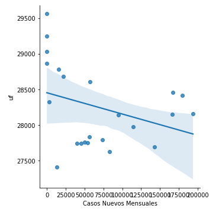

¿Cúales son los indicadores económicos que mantienen una mayor relación con la Unidad de Fomento (UF) y la tasa de desempleo?, ¿y cuales la menor?
Para poder responder a esta pregunta podemos utilizar la correlación que tienen entre sí los índices económicos a utilizar:
Despues de ver sus resultados de correlación podemos observar
que los indicadores de la libra de cobre, ivp, imacec, tasa de desempleo
y utm mantienen una correlación alta con la uf, mientras que el tpm y la
uf son lo que más se relacionan con la tasa de desempleo.
El resto posee baja correlación con nuestras variables de interés.
¿Tuvo el COVID-19 una relación directa en el aumento de la tasa de desempleo?
Para poder responder a esta pregunta podemos utilizar la correlación que tienen estos dos valores y un pequeño gráfico:
A pesar de que el gráfico da a pensar que puede haber una
relación directa, al ver la correlación que mantiene la tasa de desempleo
y el número de casos nuevos por mes notamos que es un valor muy bajo
(cercano a 0.3) por lo que no se puede afirmar que la pandemia fue el
principal factor de la alza en la tasa de desempleo.
Considerando el periodo en donde hubo mayor tasa de contaigos
de COVID-19 en el país, ¿Es posible visualizar consecuencias inmediatas en la economía del país?
Primero buscamos el inicio del periodo de mayor número de contagios, el cual comienza en el mes 13:
Ahora graficamos desde ese periodo todas las variables para ver qué implicancias tuvo la alza en los contagios:
Logramos notar que cuando se observa un mayor indice de casos de covid,
el IPC muestra una bajada en su valor, mientras que la Tasa de desempleo y el UTM mantienen un crecimineto moderado, finalmente
cuando los casos de covid se estabilizan, la tasa de desemplo baja fuertemente.
¿Tuvo el COVID-19 consecuencias directas en el valor de la Unidad de Fomento (UF)?
Para poder responder a esta pregunta podemos utilizar la correlación que tienen estos dos valores y un pequeño gráfico:

A pesar de que el gráfico da a pensar que puede haber una relación inversa,
al ver la correlación que mantiene la UF y el número de casos nuevos por
mes notamos que es un valor muy bajo (cercano a -0.3) por lo que no se puede afirmar que
la pandemia fue el principal factor de una disminución del crecimiento de la UF.
¿Se puede crear un modelo que prediga los valores de la unidad de fomento (UF) y la tasa de desempleo?
Para esto se usarán dos modelos de predicción, una para la unidad de fomento (UF)
y otra para la tasa de desempleo, cada una será puesta a prueba en las variantes de regresión lineal,
de Lasso y de Ridge, probando diversos valores de alpha para encontrar el que mejor se adapta. Como variables predictoras se utilizarán los índices anteriormente revisados
que mantienen una mayor relación con las variables que buscamos predecir.
1) Predicción del valor de la UF
Al realizar pruebas de los tres modelos de regresión, con distintos valores de alpha para los que lo requieren, se llega a la conclusión
de que el modelo que mejor se adapta a nuestras variables y estudio es el lineal regular:
- Valor R2 entrenamiento: 0.99
- Valor R2 prueba: 0.97
- MSE de entrenamiento Lineal: 1463
- MSE de prueba Lineal: 7330
Si bien es cierto los valores de error cuadrático medio no son los ideales, es un modelo que puede ser usado.
2) Predicción del valor de la tasa de desempleo
Al realizar pruebas de los tres modelos de regresión, con distintos valores de alpha para los que lo requieren, se llega a la conclusión
de que el modelo que mejor se adapta a nuestras variables y estudio es el de Ridge:
- El mejor valor de R2 para el modelo es de: 0.65
- MSE de entrenamiento Lineal: 0.91
- MSE de prueba Lineal: 5.94
Si bien es cierto se puede crear un modelo que predice el comportamiento, este será muy inexacto, por lo que no es recomendable
para ningun estudio ni uso.
Conclusiones
1) El covid no fue uno de los principales influyentes en el cambio del precio del UF y la alza en la tasa de desempleo
2) Los principales índices economicos de Chile y los casos de coronavirus suman un conjunto de información
insuficiente para implementar un modelo de predicción con respecto a la tasa de desempleo, lo que significa
que hay muchos otros factores que le influyen.
3) Los índices de la libra de cobre, el ivp, imacec, tasa de desempleo y el valor de la utm suman un conjunto
de información capaz de modelar un sistema de predcción consistente y preciso, lo que quiere decir que son estos
algunos (suficientes) de los que mayor influencia tienen en sus variaciones.